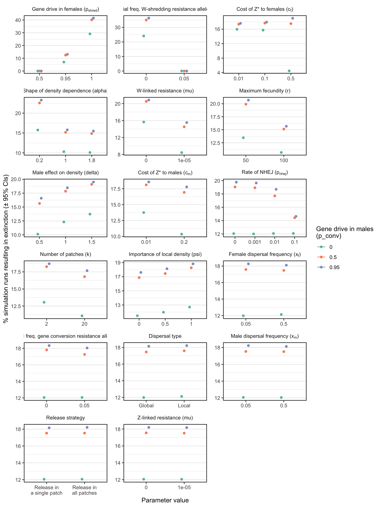
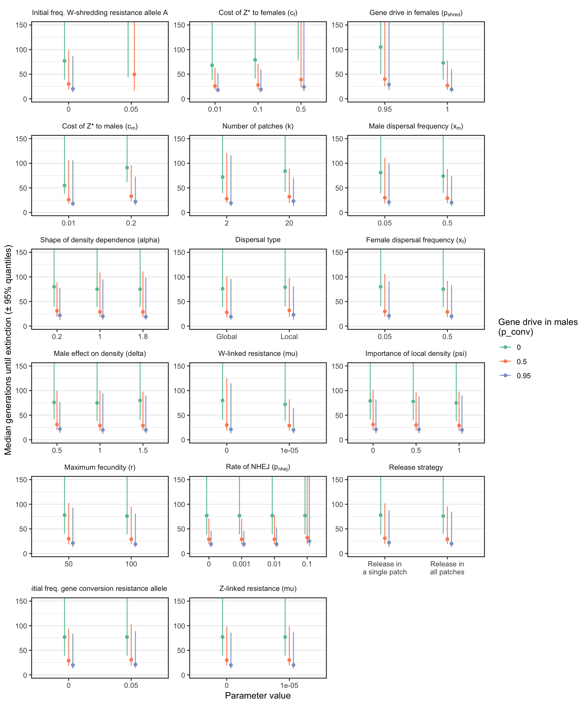
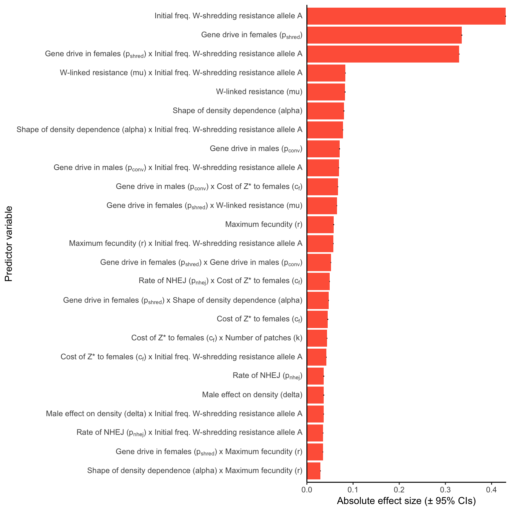
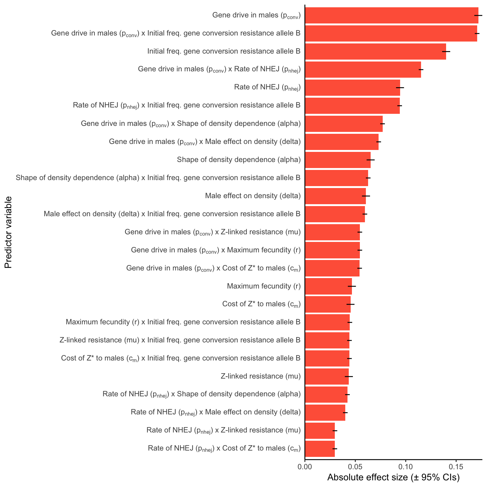

Plotting the simulation results
Last updated: 2019-05-09
Checks: 6 0
Knit directory: W_shredder/
This reproducible R Markdown analysis was created with workflowr (version 1.3.0). The Checks tab describes the reproducibility checks that were applied when the results were created. The Past versions tab lists the development history.
Great! Since the R Markdown file has been committed to the Git repository, you know the exact version of the code that produced these results.
Great job! The global environment was empty. Objects defined in the global environment can affect the analysis in your R Markdown file in unknown ways. For reproduciblity it’s best to always run the code in an empty environment.
The command set.seed(20180716) was run prior to running the code in the R Markdown file. Setting a seed ensures that any results that rely on randomness, e.g. subsampling or permutations, are reproducible.
Great job! Recording the operating system, R version, and package versions is critical for reproducibility.
Nice! There were no cached chunks for this analysis, so you can be confident that you successfully produced the results during this run.
Great! You are using Git for version control. Tracking code development and connecting the code version to the results is critical for reproducibility. The version displayed above was the version of the Git repository at the time these results were generated.
Note that you need to be careful to ensure that all relevant files for the analysis have been committed to Git prior to generating the results (you can use wflow_publish or wflow_git_commit). workflowr only checks the R Markdown file, but you know if there are other scripts or data files that it depends on. Below is the status of the Git repository when the results were generated:
Ignored files:
Ignored: .DS_Store
Ignored: .Rhistory
Ignored: .Rproj.user/
Ignored: Proc_B_manuscript/.DS_Store
Ignored: analysis/figure/
Ignored: figures/.DS_Store
Note that any generated files, e.g. HTML, png, CSS, etc., are not included in this status report because it is ok for generated content to have uncommitted changes.
These are the previous versions of the R Markdown and HTML files. If you’ve configured a remote Git repository (see ?wflow_git_remote), click on the hyperlinks in the table below to view them.
| File | Version | Author | Date | Message |
|---|---|---|---|---|
| Rmd | e857f2f | lukeholman | 2019-05-09 | wflow_publish(files = "*") |
| html | 80ecff7 | lukeholman | 2019-05-07 | Build site. |
| Rmd | 46a5660 | lukeholman | 2019-05-07 | wflow_publish(files = "*") |
| html | 2278c74 | lukeholman | 2019-05-07 | Build site. |
| Rmd | f7636e1 | lukeholman | 2019-05-07 | wflow_publish(files = "*") |
| html | 0a4b2b8 | lukeholman | 2019-05-07 | Build site. |
| Rmd | 86a1312 | lukeholman | 2019-05-07 | wflow_publish(files = "*") |
| html | f09b255 | lukeholman | 2019-05-07 | Build site. |
| Rmd | 732d19b | lukeholman | 2019-05-07 | wflow_publish(files = "*") |
| html | 38ab91e | lukeholman | 2019-05-07 | Build site. |
| html | bf89903 | lukeholman | 2019-05-06 | Build site. |
| Rmd | 67e9e8e | lukeholman | 2019-05-06 | wflow_publish(files = "*") |
| html | 9c1e80f | lukeholman | 2019-05-06 | Build site. |
| Rmd | 4af9cc2 | lukeholman | 2019-05-06 | wflow_publish(files = "*") |
| html | 780ea2c | lukeholman | 2019-05-06 | Build site. |
| Rmd | 8c3f4f0 | lukeholman | 2019-05-06 | wflow_publish(files = "*") |
| html | 29cf3c2 | lukeholman | 2019-05-06 | Build site. |
| Rmd | 610a420 | lukeholman | 2019-05-06 | wflow_publish(files = "*") |
| html | 2146e95 | lukeholman | 2019-05-06 | Build site. |
| Rmd | c5cedc1 | lukeholman | 2019-05-06 | wflow_publish(files = "*") |
| html | ad7f284 | lukeholman | 2019-05-06 | Build site. |
| Rmd | e16a419 | lukeholman | 2019-05-06 | wflow_publish(files = "*") |
| html | 5a70362 | lukeholman | 2019-05-06 | Build site. |
| Rmd | 881beb7 | lukeholman | 2019-05-06 | wflow_publish(files = "*") |
| html | 881beb7 | lukeholman | 2019-05-06 | wflow_publish(files = "*") |
| Rmd | 80347de | lukeholman | 2019-04-26 | new Proc B version |
| Rmd | 97abdcf | lukeholman | 2019-04-24 | writing and new data finally done |
| Rmd | 76dc4a7 | lukeholman | 2019-04-15 | writing in March |
| Rmd | 5aea3e0 | Luke Holman | 2019-03-06 | tweak future library |
| Rmd | 2160459 | Luke Holman | 2019-03-06 | work in March |
| html | 2160459 | Luke Holman | 2019-03-06 | work in March |
| Rmd | 4fdad66 | Luke Holman | 2019-02-06 | Fixed up plots |
| html | 4fdad66 | Luke Holman | 2019-02-06 | Fixed up plots |
| Rmd | 3b6cc7a | Luke Holman | 2019-02-05 | Making graphs, fixed combine file |
| Rmd | 76f3d92 | Luke Holman | 2019-01-09 | added line to remove cost_A mistake |
| Rmd | 8322107 | Luke Holman | 2019-01-08 | Fix annoying costA+B typo |
| Rmd | 09b03be | Luke Holman | 2018-12-29 | tweaks on desktop |
| Rmd | 15558a7 | Luke Holman | 2018-12-23 | Commit from desktop |
| Rmd | 84db6b2 | Luke Holman | 2018-12-03 | No procedure for checking completed runs |
| Rmd | 2efe487 | Luke Holman | 2018-11-30 | New script to combine files and some writing |
| Rmd | 79a4634 | Luke Holman | 2018-11-21 | Change counting of old parameters |
| Rmd | ee185ed | Luke Holman | 2018-11-19 | Extra params |
| Rmd | de9e0ff | Luke Holman | 2018-11-13 | Added slurm capacity |
| Rmd | 99e93c7 | Luke Holman | 2018-11-03 | Many bug fixes with density dependence |
| html | 99e93c7 | Luke Holman | 2018-11-03 | Many bug fixes with density dependence |
Load packages and results
packages <- c("dplyr", "purrr", "ggplot2", "reshape2", "Cairo", "knitr",
"latex2exp", "pander", "grid", "gridExtra", "ggthemes", "data.table",
"readr", "tibble", "biglm", "kableExtra", "future", "future.apply")
shh <- suppressMessages(lapply(packages, library, character.only = TRUE, quietly = TRUE))
if(!file.exists("data/all_results.rds")){
# Open all the results files and bind them together into a tibble
results <- lapply(list.files(path = file.path(getwd(), "data"), pattern = "results_", full.names = TRUE),
function(focal_file) {
readRDS(focal_file) %>% filter(cost_A == 0 & cost_B == 0)}) %>%
rbindlist() %>% as_tibble()
# Make sure each unique parameter space is run exactly once
results <- results %>%
distinct(release_strategy, W_shredding_rate, Z_conversion_rate,
Zr_creation_rate, Zr_mutation_rate, Wr_mutation_rate,
cost_Zdrive_female, cost_Zdrive_male, male_migration_prob,
female_migration_prob, migration_type, n_patches, softness,
male_weighting, density_dependence_shape, max_fecundity, realisations,
initial_A, initial_B, .keep_all = TRUE)
saveRDS(results, file = "data/all_results.rds")
} else results <- read_rds("data/all_results.rds")
results$went_extinct <- ifelse(results$outcome == "Population extinct", 1, 0)
results$migration_type[results$migration_type == "local"] <- "Local"
results$migration_type[results$migration_type == "global"] <- "Global"
# Command to upload the results file to Spartan - needed for Spartan to queue up all the parameter spaces not already finished
# scp /Users/lholman/Rprojects/W_shredder/data/all_results.rds lukeholman@spartan:/data/projects/punim0243/W_shredder/data/all_results.rds
# Helper function to get a list of all the model parameters that vary between runs
find_variable_parameters <- function(dat){
dat %>%
select(-id, -realisations, -generation_extinct, -generation_Zd_extinct,
-generation_W_extinct, -generation_Zd_fixed, -outcome, -went_extinct,
-mating_table, -initial_Wr, -initial_Zr) %>%
sapply(function(x) length(unique(x))) %>%
keep(~.x > 1) %>% names()
}
variable_parameters <- find_variable_parameters(results)
combinations <- apply(combn(variable_parameters, 2), 2, paste0, collapse = " x ") # all 2-way combos of parameters
# Make a data frame to convert R-friendly names to figure-friendly names
nice_names <- data.frame(
original = c(variable_parameters, combinations),
new = gsub("_", " ", c(variable_parameters, combinations)),
stringsAsFactors = FALSE) %>%
mutate(
new = gsub("rel", "Rel", new),
new = gsub("W shredding rate", "Gene drive in females ($p_{shred}$)", new),
new = gsub("Z conversion rate", "Gene drive in males ($p_{conv}$)", new),
new = gsub("Zr creation rate", "Rate of NHEJ ($p_{nhej}$)", new),
new = gsub("Zr mutation rate", "Z-linked resistance ($\\mu{_Z}$)", new),
new = gsub("Wr mutation rate", "W-linked resistance ($\\mu{_W}$)", new),
new = gsub("cost Zdrive female", "Cost of Z* to females ($c_f$)", new),
new = gsub("cost Zdrive male", "Cost of Z* to males ($c_m$)", new),
new = gsub("male migration prob", "Male dispersal frequency", new),
new = gsub("feMale dispersal frequency", "Female dispersal frequency (xf)", new),
new = gsub("Male dispersal frequency", "Male dispersal frequency (xm)", new),
new = gsub("xm", "$x_m$", new),
new = gsub("xf", "$x_f$", new),
new = gsub("migration type", "Dispersal type", new),
new = gsub("n patches", "Number of patches ($k$)", new),
new = gsub("softness", "Importance of local density ($\\psi$)", new),
new = gsub("male weighting", "Male effect on density ($\\delta$)", new),
new = gsub("density dependence shape", "Shape of density dependence ($\\alpha$)", new),
new = gsub("max fecundity", "Maximum fecundity ($r$)", new),
new = gsub("initial A", "Initial freq. W-shredding resistance allele A", new),
new = gsub("initial B", "Initial freq. gene conversion resistance allele B", new),
new = as.character(TeX(new))) %>%
mutate(new = gsub("mu", "\\mu", new))
# Sort the results between those that model a W-shredder, versus those that model a Z* that sterilises females
W_shredder <- results %>% filter(cost_Zdrive_female != 1)
female_sterilising <- results %>% filter(cost_Zdrive_female == 1)
pretty <- function(x) prettyNum(x, big.mark = ",", scientific = FALSE)
# Count the number of runs and save for entry into the manuscript
data.frame(total_runs = pretty(nrow(results)),
W_shredder_runs = pretty(nrow(W_shredder)),
female_sterilising_runs = pretty(nrow(female_sterilising)),
W_shredder_runs_extinct = pretty(sum(W_shredder$went_extinct)),
female_sterilising_runs_extinct = pretty(sum(female_sterilising$went_extinct))) %>%
saveRDS(file = "data/number_of_runs.rds")
rm(results)Table showing the frequencies of each possible outcome
Table S1: The number and percentage of simulation runs that ended with the five possible outcomes, for the subset of simulation runs focusing on a W-shredder gene drive.
make_tally_table <- function(dat){
outcomes <- dat$outcome %>% table() %>% melt() %>% arrange(-value) %>% mutate(p = round(100 * value / sum(value), 1))
names(outcomes) <- c("Outcome", "Number of simulations", "%")
outcomes %>% mutate(Outcome = gsub("without", "without causing", Outcome),
Outcome = gsub("n extinct", "n went extinct", Outcome),
Outcome = gsub("d extinct", "d went extinct", Outcome),
Outcome = gsub("Zd", "Z*", Outcome))
}
table_S1 <- make_tally_table(W_shredder)
saveRDS(table_S1, file = "figures/tableS1.rds")
table_S1 %>% pander()| Outcome | Number of simulations | % |
|---|---|---|
| Z* fixed without causing extinction | 2330324 | 41.2 |
| Z* went extinct | 1584409 | 28 |
| Population went extinct | 917328 | 16.2 |
| Wr fixed | 689487 | 12.2 |
| Timer expired | 136152 | 2.4 |
Table S2: The number and percentage of simulation runs that ended with the five possible outcomes, for the subset of simulation runs focusing on a female-sterilising Z-linked gene drive.
table_S2 <- make_tally_table(female_sterilising)
saveRDS(table_S2, file = "figures/tableS2.rds")
table_S2 %>% pander()| Outcome | Number of simulations | % |
|---|---|---|
| Z* went extinct | 539978 | 85.7 |
| Timer expired | 69942 | 11.1 |
| Population went extinct | 12992 | 2.1 |
| Wr fixed | 7042 | 1.1 |
Make Figure 2
plot_run <- function(){
get_data <- function(model_id, allele_freqs_list, result_df, label){
df <- pluck_allele_freqs(model_id, allele_freqs_list)
alleles_to_plot <- group_by(df, allele) %>%
summarise(uniques = length(unique(frequency))) %>%
filter(uniques > 1) %>% # Don't plot alleles that stay at 0 whole time
pull(allele)
alleles_to_plot <- c(alleles_to_plot, "N")
df <- df[df$allele %in% alleles_to_plot, ]
df$frequency[df$allele == "N"] <- df$frequency[df$allele == "N"] /
max(df$frequency[df$allele == "N"])
paras <- result_df %>% mutate(id = as.character(id)) %>% filter(id == model_id)
last_generation <- tail(df,12) %>% select(allele, frequency)
print(paras); print(last_generation)
df %>% mutate(facet = label,
allele = replace(allele, allele == "Zd", "Z*"),
allele = replace(allele, allele == "females", "Females"))
}
allele_freqs <- read_rds("data/allele_freqs_1.rds")
rbind(
get_data("10024119427447", allele_freqs, W_shredder, "A. Z* causes rapid extinction"),
get_data("1002596940286", allele_freqs, W_shredder, "B. Z* fails to cause extinction"),
get_data("10024112958792", allele_freqs, W_shredder, "C. Resistance to Z* prevents extinction")) %>%
ggplot(aes(x = generation, y = frequency, colour = allele, group = allele)) +
geom_vline(xintercept = 50, linetype = 3, colour = "grey10", size = 0.9) +
geom_line(size = 0.9, alpha = 0.9) +
facet_wrap(~facet, scales = "free_x") +
theme_hc() + scale_colour_hc(name = "") +
theme(strip.text = element_text(hjust = 0),
strip.background = element_rect(fill = "grey90"),
legend.position = "top",
axis.ticks.y = element_blank()) +
xlab("Generation") + ylab("Frequency")
}
fig2 <- plot_run()fig2
| Version | Author | Date |
|---|---|---|
| 29cf3c2 | lukeholman | 2019-05-06 |
Figure 2: Three illustrative runs of the simulation, showing evolution in response to the introduction of 20 males carrying a W-shredder at Generation 50 (marked by the dotted line). In panel A, the driving Z* allele fixed very quickly, causing population extinction as the number of females dropped to zero. In panel B, the Z* allele spread up until the point that its fitness costs began to negate its transmission advantage, causing the population to halve in size but not to go extinct. In panel C, the Z* allele invaded, selecting for the resistance alleles A and Zr, and causing the Z* allele to reverse course and go extinct. The population size N is shown as a fraction of its maximum value of 10,000. Table S3 gives the parameter spaces used for these three runs.
tabl <- t(rbind(
data.frame(Panel = "A", W_shredder %>% filter(id == "10024119427447")),
data.frame(Panel = "B", W_shredder %>% filter(id == "1002596940286")),
data.frame(Panel = "C", W_shredder %>% filter(id == "10024112958792"))) %>%
select(release_strategy, W_shredding_rate,
Z_conversion_rate, Zr_creation_rate, Zr_mutation_rate,
Wr_mutation_rate, cost_Zdrive_female, cost_Zdrive_male,
male_migration_prob, female_migration_prob,
migration_type, n_patches, softness, male_weighting,
density_dependence_shape, max_fecundity, initial_A, initial_B))
nice_names2 <- data.frame(original = variable_parameters,
new = gsub("_", " ", variable_parameters),
stringsAsFactors = FALSE) %>%
mutate(
new = gsub("rel", "Rel", new),
new = gsub("W shredding rate", "Gene drive in females (p_shred)", new),
new = gsub("Z conversion rate", "Gene drive in males (p_conv)", new),
new = gsub("Zr creation rate", "Rate of NHEJ (p_nhej)", new),
new = gsub("Zr mutation rate", "Z-linked resistance (μ_Z)", new),
new = gsub("Wr mutation rate", "W-linked resistance (μ_W)", new),
new = gsub("cost Zdrive female", "Cost of Z* to females (c_f)", new),
new = gsub("cost Zdrive male", "Cost of Z* to males (c_m)", new),
new = gsub("male migration prob", "Male dispersal frequency", new),
new = gsub("feMale dispersal frequency", "Female dispersal frequency (x_f)", new),
new = gsub("Male dispersal frequency", "Male dispersal frequency (x_m)", new),
new = gsub("migration type", "Dispersal type", new),
new = gsub("n patches", "Number of patches (k)", new),
new = gsub("softness", "Importance of local density (ψ)", new),
new = gsub("male weighting", "Male effect on density (ùõø)", new),
new = gsub("density dependence shape", "Shape of density dependence (α)", new),
new = gsub("max fecundity", "Maximum fecundity (r)", new),
new = gsub("initial A", "Intial freq. W-shredding resistance allele A", new),
new = gsub("initial B", "Intial freq. gene conversion resistance allele B", new))
rownames(tabl) <- nice_names2$new[match(rownames(tabl), nice_names2$original)]
rownames(tabl) <- gsub("[.]", "", rownames(tabl))
colnames(tabl) <- c("Panel A", "Panel B", "Panel C")Table S3: List of the parameter values used to generate the simulation runs shown in Figure 1.
as.data.frame(tabl) %>% kable(format = "html", escape = FALSE) %>% kable_styling()| Panel A | Panel B | Panel C | |
|---|---|---|---|
| Release strategy | one_patch | one_patch | all_patches |
| Gene drive in females (p_shred) | 1 | 1 | 1 |
| Gene drive in males (p_conv) | 0.95 | 0.00 | 0.50 |
| Rate of NHEJ (p_nhej) | 0.01 | 0.00 | 0.10 |
| Z-linked resistance (μ_Z) | 0 | 0 | 0 |
| W-linked resistance (μ_W) | 0 | 0 | 0 |
| Cost of Z* to females (c_f) | 0.01 | 0.50 | 0.50 |
| Cost of Z* to males (c_m) | 0.01 | 0.20 | 0.01 |
| Male dispersal frequency (x_m) | 0.50 | 0.05 | 0.05 |
| Female dispersal frequency (x_f) | 0.5 | 0.5 | 0.5 |
| Dispersal type | Global | Global | Global |
| Number of patches (k) | 20 | 20 | 20 |
| Importance of local density (ψ) | 1 | 1 | 1 |
| Male effect on density (ùõø) | 1.0 | 1.5 | 1.0 |
| Shape of density dependence (α) | 1.0 | 0.2 | 1.8 |
| Maximum fecundity (r) | 50 | 50 | 50 |
| Intial freq W-shredding resistance allele A | 0.00 | 0.00 | 0.05 |
| Intial freq gene conversion resistance allele B | 0 | 0 | 0 |
Plot the effects of each parameter on extinction
# Find the proportion of runs that went extinct for each parameter value
get_percent_extinct <- function(dat, parameter){
dat %>%
group_by(!! sym(parameter)) %>%
summarise(extinct = sum(went_extinct),
not_extinct = n() - sum(went_extinct),
prob = list(binom.test(extinct, extinct + not_extinct))) %>%
rowwise() %>%
mutate(response_variable = 100 * extinct/(extinct + not_extinct),
lower_95_CI = 100 * prob$conf.int[1],
upper_95_CI = 100 * prob$conf.int[2],
parameter = parameter) %>% rename(value = !! sym(parameter)) %>%
select(parameter, value, everything()) %>% select(-prob) %>% ungroup()
}
# Find the median time to extinction, among just those runs in which extinction occurred, for each parameter value
get_extinction_time <- function(dat, parameter){
dat %>%
filter(!is.na(generation_extinct)) %>% # only include runs where extinction occurred
group_by(!! sym(parameter)) %>%
summarise(response_variable = median(generation_extinct),
lower_95_CI = quantile(generation_extinct, probs = 0.025),
upper_95_CI = quantile(generation_extinct, probs = 0.975),
n = n(),
parameter = parameter) %>% rename(value = !! sym(parameter)) %>%
select(parameter, value, everything()) %>% ungroup()
}
# To calculate separately for the 3 levels of Z_conversion_rate (male gene drive)
split_by_male_drive <- function(dat, fun){
rbind(
lapply(
variable_parameters[variable_parameters != "Z_conversion_rate"],
get(fun),
dat = dat %>%
filter(Z_conversion_rate == 0)) %>% do.call("rbind", .) %>% mutate(Z_conversion_rate = 0),
lapply(
variable_parameters[variable_parameters != "Z_conversion_rate"],
get(fun),
dat = dat %>%
filter(Z_conversion_rate == 0.5)) %>% do.call("rbind", .) %>% mutate(Z_conversion_rate = 0.5),
lapply(
variable_parameters[variable_parameters != "Z_conversion_rate"],
get(fun),
dat = dat %>%
filter(Z_conversion_rate == 0.95)) %>% do.call("rbind", .) %>% mutate(Z_conversion_rate = 0.95)
) %>% mutate(Z_conversion_rate = factor(Z_conversion_rate, levels = c(0, 0.5, 0.95)))
}
# % extinct, calculated separately for the three levels of Z_conversion_rate
W_shredder_split_by_male_drive_percent_extinct <- split_by_male_drive(W_shredder, "get_percent_extinct")
female_sterilising_split_by_male_drive_percent_extinct <- split_by_male_drive(female_sterilising, "get_percent_extinct") %>%
filter(!(parameter %in% c("cost_Zdrive_female", "W_shredding_rate")))
# Time until extinction, calculated separately for the three levels of Z_conversion_rate
W_shredder_split_by_male_drive_time_to_extinct <- split_by_male_drive(W_shredder, "get_extinction_time")
female_sterilising_split_by_male_drive_time_to_extinct <- split_by_male_drive(female_sterilising, "get_extinction_time") %>%
filter(!(parameter %in% c("cost_Zdrive_female", "W_shredding_rate")))
# Function to make Figure 3 (and similar supplementary figures)
make_multipanel_figure <- function(dat, ylab){
parameter_importance <- dat %>%
mutate(parameter = nice_names$new[match(parameter, nice_names$original)]) %>%
group_by(parameter) %>% summarise(range = max(response_variable) - min(response_variable)) %>%
arrange(-range) %>% pull(parameter)
levels <- levels(factor(dat$value))
levels <- c(levels[!(levels %in% c("all_patches", 100))], 100, "all_patches")
levels <- replace(levels, levels == "all_patches", "Release in\nall patches")
levels <- replace(levels, levels == "one_patch", "Release in\na single patch")
pd <- position_dodge(0.2)
dat %>%
mutate(parameter = nice_names$new[match(parameter, nice_names$original)],
parameter = factor(parameter, parameter_importance),
value = replace(value, value == "all_patches", "Release in\nall patches"),
value = replace(value, value == "one_patch", "Release in\na single patch"),
value = factor(value, levels)) %>%
ggplot(aes(value, response_variable, colour = Z_conversion_rate)) +
geom_errorbar(aes(ymin = lower_95_CI, ymax = upper_95_CI), width = 0, position = pd) +
geom_point(position = pd) +
scale_colour_brewer(palette = "Set2", name = "Gene drive in males\n(p_conv)") +
xlab("Parameter value") +
ylab(ylab) +
theme_bw() +
theme(strip.background = element_blank(),
panel.grid.major.x = element_blank(),
panel.border = element_rect(fill = NA, size = 1))
}
fig3 <- make_multipanel_figure(W_shredder_split_by_male_drive_percent_extinct,
ylab = "% simulation runs resulting in extinction (\u00B1 95% CIs)")% extinction plot for a W-shredder (Figure 3)
cairo_pdf(file = "figures/figure3.pdf", width = 9, height = 12)
fig3 + facet_wrap(~parameter, scales = "free", labeller = label_parsed, ncol = 4) + theme(legend.position = c(.9, .1))
dev.off()quartz_off_screen
2 fig3 + facet_wrap(~parameter, scales = "free", labeller = label_parsed, ncol = 3) 
Figure 3: The percentage of simulations of a W-shredder that ended in extinction, for all runs with a particular value (shown on the \(x\)-axis) for a given parameter (shown in the panels). For example, in all the thousands of runs for which I assumed \(p_{shred} = 0.5\), there were no extinctions, while among the runs where \(p_{shred} = 1\), over 60% resulted in extinction. The panels are ordered by the range of the y-axis, which highlights the relative importance of the variables for the probability of extinction. Figure S1 shows the median time-to-extinction for each parameter value, and Figures S3-S4 give similar plots for simulations that considered a female-sterilising Z-linked gene drive instead of a W-shredder.
Time-to-extinction plot for a W-shredder (Figure S1)
S1_fig <- make_multipanel_figure(filter(W_shredder_split_by_male_drive_time_to_extinct, n >= 40),
ylab = "Median generations until extinction (\u00B1 95% quantiles)") +
facet_wrap(~parameter, scales = "free", labeller = label_parsed, ncol = 3) +
coord_cartesian(ylim = c(0, 150))
ggsave(S1_fig, filename = "figures/S1_fig.pdf", height = 12, width = 19.5)
saveRDS(S1_fig, file = "figures/S1_fig.rds")
S1_fig
Figure S1: Similar plot to Figure 3, except that the y-axis shows the median number of generations until the W-shredder caused extinction, among just the subset of simulations in which extinction actually occurred. A median was only calculated if at least 40 simulation runs reached extinction.
% extinction plot for a female-sterilising Z-drive (Figure S3)
S3_fig <- make_multipanel_figure(female_sterilising_split_by_male_drive_percent_extinct,
ylab = "% simulation runs resulting in extinction (\u00B1 95% CIs)") +
facet_wrap(~parameter, scales = "free", labeller = label_parsed, ncol = 4)
ggsave(S3_fig, filename = "figures/S3_fig.pdf", height = 9.6, width = 10)
saveRDS(S3_fig, file = "figures/S3_fig.rds")
S3_fig
Figure S3: Analagous information to Figure 3, but showing the results for a female-sterilising Z* allele instead of a W-shredder.
Time-to-extinction plot for a female-sterilising Z-drive (Figure S4)
S4_fig <- make_multipanel_figure(filter(female_sterilising_split_by_male_drive_time_to_extinct, n >= 40),
ylab = "Median generations until extinction (\u00B1 95% quantiles)") +
facet_wrap(~parameter, scales = "free", labeller = label_parsed, ncol = 3) +
coord_cartesian(ylim = c(0, 100))
ggsave(S4_fig, filename = "figures/S4_fig.pdf", height = 12, width = 10)
saveRDS(S4_fig, file = "figures/S4_fig.rds")
S4_fig
Figure S4: Analagous information to Figure S1, but showing the results for a female-sterilising Z* allele instead of a W-shredder. Note that a median was only calculated if at least 40 simulation runs reached extinction, and extinction only occurred when gene drive in males was strong.
Finding variables with interacting effects on the extinction probability
Testing for interactions using GLM
Run a binomial generalized linear model (GLM), with all of the variable model parameters and all their 2-way interactions as predictors. The response variable is extinction, coded as a zero or one. Since the number of data points is very large (millions), I use the biglm package (“big GLM”). I run a model separately on all the runs that considered the evolution of a W-shredder, and all the runs that considered a female-sterilising Z*.
run_big_glm <- function(dat, sterilising = FALSE){
if(sterilising){
variable_parameters <- variable_parameters[!(variable_parameters %in% c("W_shredding_rate", "cost_Zdrive_female"))]
}
formula <- paste("went_extinct ~ (",
paste0(variable_parameters, collapse = " + "), ")^2",
sep = "")
if(!sterilising) formula <- paste(formula, "- W_shredding_rate:cost_Zdrive_female")
bigglm(as.formula(formula),
data = dat %>% mutate_if(is.numeric, function(x) as.numeric(scale(x))),
chunksize = 10000)
}
# Helper to get the fixed effects table out of the biglm object (no 'coefficients' slot, apparently)
tidy_model <- function(model){
out <- capture.output(model %>% summary)[-(1:5)] %>% lapply(function(x) {
x <- strsplit(x, split = " ")[[1]]
x[x != ""]
}) %>% do.call("rbind", .) %>% as.data.frame(stringsAsFactors = FALSE) %>% as_tibble() %>%
mutate(V1 = as.factor(gsub(":", " x ", V1))) %>% mutate_if(is.character, as.numeric)
names(out) <- c("Parameter", "Estimate", "Lower_95_CI", "Upper_95_CI", "SE", "p")
out %>% arrange(-abs(Estimate))
}
if(!file.exists("data/W_shredder_model.rds")) {
W_shredder_model <- run_big_glm(W_shredder)
saveRDS(tidy_model(W_shredder_model), "data/W_shredder_model.rds")
female_sterilising_model <- run_big_glm(female_sterilising, sterilising = TRUE)
saveRDS(tidy_model(female_sterilising_model), "data/female_sterilising_model.rds")
} else {
W_shredder_model <- readRDS("data/W_shredder_model.rds")
female_sterilising_model <- readRDS("data/female_sterilising_model.rds")
}Finding the top-ranked effects in the GLM
importance_plot <- function(dat, n = "all"){
if(n != "all"){
dat <- dat %>%
mutate(row=1:n()) %>% filter(row %in% 1:n)
}
for(i in 1:nrow(dat)){
if(dat$Estimate[i] < 0){
lower <- dat$Lower_95_CI[i]
dat$Lower_95_CI[i] <- dat$Upper_95_CI[i]
dat$Upper_95_CI[i] <- lower
}
}
dat <- dat %>%
mutate(Parameter = gsub("one_patch", "", as.character(Parameter)),
Parameter = gsub("Local", "", Parameter),
Parameter = factor(Parameter, rev(Parameter)),
tick_label = nice_names$new[match(Parameter, nice_names$original)])
dat %>%
ggplot(aes(Parameter, abs(Estimate))) +
geom_bar(stat = "identity", fill = "tomato") +
geom_errorbar(aes(ymin = abs(Lower_95_CI), ymax = abs(Upper_95_CI)), width = 0) +
coord_flip() +
scale_y_continuous(expand = c(0, 0)) +
scale_x_discrete(labels = parse(text = rev(dat$tick_label))) +
xlab("Predictor variable") + ylab("Absolute effect size (\u00B1 95% CIs)") +
theme_classic() +
theme(axis.ticks.y = element_blank())
}
W_shred <- importance_plot(W_shredder_model, n = 25)
female_sterile <- importance_plot(female_sterilising_model, n = 25)For a W-shredder (Figure 4)
W_shred
Figure 4: Relative parameter importance in the simulations of W-shredders, for the top 25 most important main effects or two-way interactions (from a binomial GLM that included all the main effects and all their two-way interactions). Each predictor variable was scaled before running the model, meaning that the absolute effect size indicates how important each parameter is to the extinction probability, given the range of values plotted in Figure 3. Figure S5 gives a similar plot for simulations of a female-sterilising \(Z^*\) allele.
For a female-sterilising drive
female_sterile
Figure S5: Relative parameter importance in the simulations of Z-linked female-sterilising gene drives, for the top 25 most important main effects or two-way interactions (from a binomial GLM that included all the main effects and all their two-way interactions). Each predictor variable was scaled before running the model, meaning that the absolute effect size indicates how important each parameter is to the extinction probability, given the range of values plotted in Figure S3.
Plot showing interacting effects on extinction probability
get_percent_extinct_double <- function(dat, p1, p2){
output <- dat %>%
group_by(!! sym(p1), !! sym(p2)) %>%
summarise(extinct = sum(went_extinct),
not_extinct = n() - sum(went_extinct),
prob = list(binom.test(extinct, extinct + not_extinct))) %>%
rowwise() %>%
mutate(percent_extinct = 100 * extinct / (extinct + not_extinct),
lower_95_CI = 100 * prob$conf.int[1],
upper_95_CI = 100 * prob$conf.int[2],
parameter_1 = p1,
parameter_2 = p2)
names(output)[1:2] <- paste("value", 1:2, sep = "_")
output %>%
mutate(value_1 = as.character(value_1), value_2 = as.character(value_2)) %>%
select(parameter_1, parameter_2, value_1, value_2, everything()) %>%
select(-prob) %>% ungroup()
}
top_12_shredder <- (W_shredder_model %>% mutate(Parameter = as.character(Parameter)) %>% filter(grepl(" x ", Parameter)) %>% pull(Parameter))[1:12]
top_12_sterilising <- (female_sterilising_model %>% mutate(Parameter = as.character(Parameter)) %>% filter(grepl(" x ", Parameter)) %>% pull(Parameter))[1:12]
two_way_W_shredder <- map2_df(str_split(top_12_shredder, " x ", simplify = TRUE)[, 1],
str_split(top_12_shredder, " x ", simplify = TRUE)[, 2],
get_percent_extinct_double, dat = W_shredder)
two_way_sterilising <- map2_df(str_split(top_12_sterilising, " x ", simplify = TRUE)[, 1],
str_split(top_12_sterilising, " x ", simplify = TRUE)[, 2],
get_percent_extinct_double, dat = W_shredder)
two_way_plot <- function(two_way_data, pairwise_combos){
two_way_data <- two_way_data %>%
mutate(pasted = paste(parameter_1, parameter_2, sep = " x "),
parameter_1 = nice_names$new[match(parameter_1, nice_names$original)],
parameter_2 = nice_names$new[match(parameter_2, nice_names$original)]) %>%
filter(pasted %in% pairwise_combos)
z_range <- range(two_way_data$percent_extinct) * 1.1
make_one <- function(df){
df$value_1 <- factor(df$value_1, unique(df$value_1))
df$value_2 <- factor(df$value_2, unique(df$value_2))
ggplot(df, aes(value_1, value_2, fill = percent_extinct)) +
geom_tile(colour = "black", linetype = 3) +
scale_fill_distiller(palette = "PuBuGn", direction = 1, limits = z_range, name = "% extinct") +
theme_bw() +
theme() +
scale_x_discrete(expand = c(0,0), name = parse(text = df$parameter_1[1])) +
scale_y_discrete(expand = c(0,0), name = parse(text = df$parameter_2[1]))
}
grid_arrange_shared_legend <- function(...) {
plots <- list(...)
g <- ggplotGrob(plots[[1]] + theme(legend.position="bottom"))$grobs
legend <- g[[which(sapply(g, function(x) x$name) == "guide-box")]]
lheight <- sum(legend$height)
plots <- lapply(plots, function(x) ggplotGrob(x + theme(legend.position = "none")))
p <- gtable_cbind(gtable_rbind(plots[[1]], plots[[4]], plots[[7]]),
gtable_rbind(plots[[2]], plots[[5]], plots[[8]]),
gtable_rbind(plots[[3]], plots[[6]], plots[[9]]))
grid.arrange(p, legend,
nrow = 2,
heights = unit.c(unit(1, "npc") - lheight, lheight))
}
dat_list <- vector(mode = "list", length = length(pairwise_combos))
for(i in 1:length(pairwise_combos)){
dat_list[[i]] <- two_way_data %>% filter(pasted == pairwise_combos[i])
}
lapply(dat_list, make_one) %>% do.call("grid_arrange_shared_legend", .)
}
two_way_plot_shredder <- two_way_plot(two_way_W_shredder, top_12_shredder)
two_way_plot_sterilising <- two_way_plot(two_way_sterilising, top_12_sterilising)
saveRDS(two_way_plot_shredder, file = "figures/S2_fig.rds")
saveRDS(two_way_plot_sterilising, file = "figures/S6_fig.rds")
grid.draw(two_way_plot_shredder)
Figure S2: Heatmap illustrating the twelve strongest two-way interactions for simulations of a W-shredder, as determined by the effect sizes from the GLM plotted in Figure 4. The colour shows the % simulations runs that ended in extinction for each pair of parameter values.
grid.draw(two_way_plot_sterilising)
Figure S6: Heatmap illustrating the twelve strongest two-way interactions for simulations of a female-sterilising gene drive, as determined by the effect sizes from the GLM plotted in Figure S5. The colour shows the % simulations runs that ended in extinction for each pair of parameter values.
sessionInfo()R version 3.5.1 (2018-07-02)
Platform: x86_64-apple-darwin15.6.0 (64-bit)
Running under: macOS High Sierra 10.13.6
Matrix products: default
BLAS: /Library/Frameworks/R.framework/Versions/3.5/Resources/lib/libRblas.0.dylib
LAPACK: /Library/Frameworks/R.framework/Versions/3.5/Resources/lib/libRlapack.dylib
locale:
[1] en_AU.UTF-8/en_AU.UTF-8/en_AU.UTF-8/C/en_AU.UTF-8/en_AU.UTF-8
attached base packages:
[1] grid parallel stats graphics grDevices utils datasets
[8] methods base
other attached packages:
[1] future.apply_1.0.1 future_1.11.1.1 kableExtra_0.9.0
[4] biglm_0.9-1 DBI_1.0.0 data.table_1.12.2
[7] ggthemes_4.0.1 gridExtra_2.3 pander_0.6.2
[10] latex2exp_0.4.0 knitr_1.22 Cairo_1.5-9
[13] ggplot2_3.1.0 tibble_2.0.99.9000 readr_1.1.1
[16] rslurm_0.4.0 Rcpp_1.0.1 reshape2_1.4.3
[19] stringr_1.4.0 tidyr_0.8.2 purrr_0.3.2
[22] dplyr_0.8.0.1
loaded via a namespace (and not attached):
[1] tidyselect_0.2.5 xfun_0.6 listenv_0.7.0
[4] colorspace_1.3-2 htmltools_0.3.6 viridisLite_0.3.0
[7] yaml_2.2.0 utf8_1.1.4 rlang_0.3.4
[10] pillar_1.3.1.9000 glue_1.3.1.9000 withr_2.1.2
[13] RColorBrewer_1.1-2 plyr_1.8.4 munsell_0.5.0
[16] gtable_0.2.0 workflowr_1.3.0 rvest_0.3.2
[19] codetools_0.2-15 evaluate_0.13 labeling_0.3
[22] fansi_0.4.0 scales_1.0.0 backports_1.1.2
[25] fs_1.3.1 hms_0.4.2 digest_0.6.18
[28] stringi_1.4.3 rprojroot_1.3-2 cli_1.1.0
[31] tools_3.5.1 magrittr_1.5 lazyeval_0.2.2
[34] crayon_1.3.4 whisker_0.3-2 pkgconfig_2.0.2
[37] xml2_1.2.0 assertthat_0.2.1 rmarkdown_1.10
[40] httr_1.4.0 rstudioapi_0.10 R6_2.4.0
[43] globals_0.12.4 git2r_0.23.0 compiler_3.5.1